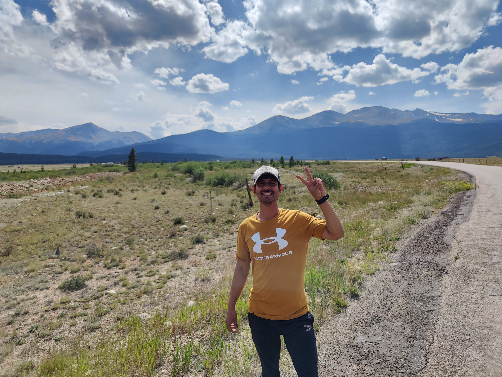
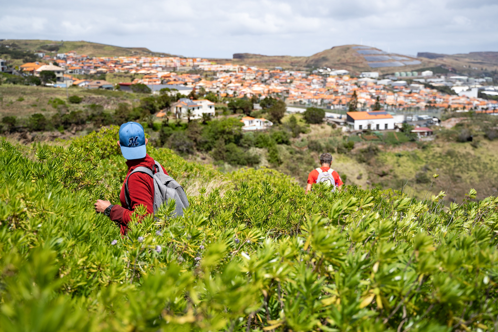

Beyond research
Curiosity is a practice, in and out of the lab.
My path has crossed teaching, applied research, and interdisciplinary AI work in India, Portugal, and the United States.
01 / Journey
Teaching, research, and a wider view of intelligence.
I began my career teaching computer science in India before moving into research roles in Portugal and the United States. That experience shaped the questions I care about now: how can intelligent systems help people make better decisions, and how can we design them with enough humility to be useful?
- PhD, Computer Engineering — University of Nebraska-Lincoln, 2023-2026
- Researcher — LARSYS / Madeira Interactive Technologies Institute, Portugal
- Former faculty member — University of Petroleum and Energy Studies and Parul University, India
The best research stays close to the people whose lives it hopes to improve.
02 / Outside
Following the trail uphill.
Outside of research, I am drawn to long hikes, mountain landscapes, and the patient work of reaching a summit. These experiences keep me grounded and make room for a different kind of perspective.

